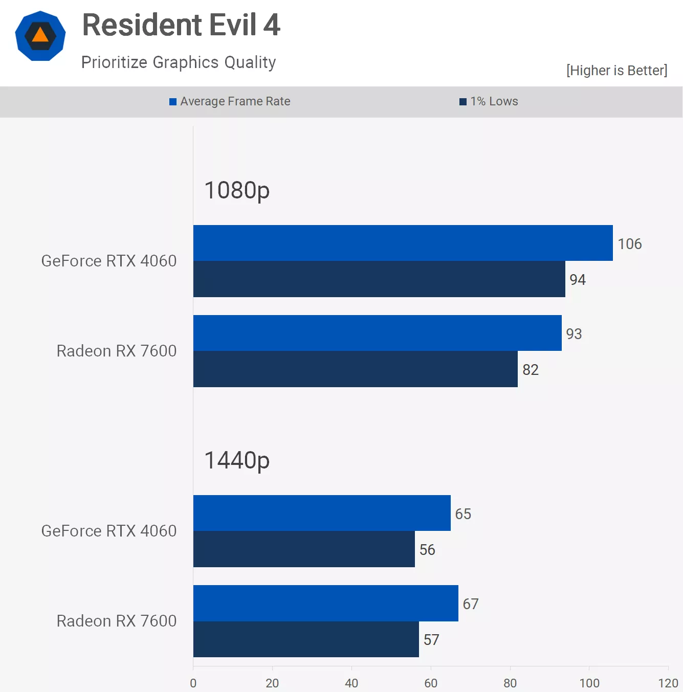

GeForce RTX 4060 vs. Radeon RX 7600: $300 GPU Upgrade
Today, we've got an in-depth comparison between the Radeon RX 7600 and GeForce RTX 4060. After reviewing the RTX 4060 for the first time a few weeks ago, we came away quite disappointed, concluding that neither the RTX 4060 nor the competing Radeon 7600 were worth buying in the current market – not as long as the previous-gen Radeon 6700 XT could be had for $330, offering more performance and a bigger VRAM buffer.
As of writing, the Radeon 6700 XT can still be purchased new from retailers for $330, with open-box stock selling for as low as $300. So our recommendation remains to buy the 6700 XT over either of the newer releases. But what if you don't have affordable 6700 XT's in your region, or you're reading this months later when either all Radeon 6700 XT stock has dried up or the 7600 and/or 4060 have dropped in price? Which one should you buy?
Right now, the Radeon RX 7600 is typically selling at the $270 MSRP, while the GeForce RTX 4060 is also typically selling at its $300 MSRP. This makes the Radeon GPU 10% cheaper, which is a nice discount, but is it worth it?
Does a $30 saving justify losing out on DLSS support, more mature ray tracing support, and improved power efficiency? Well, let's find out.
For testing, the CPU used is the Ryzen 7 7800X3D, which has been paired with the Gigabyte X670E Aorus Master, using 32GB of DDR5-6000 CL30 memory. As usual, we'll go over the data for around a dozen titles before jumping into the detailed breakdown graphs. The resolutions of interest here are 1080p and 1440p, so let's get into it.
Benchmarks
First up, we have Cyberpunk 2077 using the high-quality preset, and under these conditions, we found the 7600 to be 5% faster at 1080p and 13% faster at 1440p. So, a clear win here for the Radeon GPU, especially at 1440p where the margin starts to become significant.
However, if you want to enable ray tracing, the RX 7600 might not be the best choice; in fact, it isn't, with the RTX 4060 delivering more than twice as much performance at both resolutions. That said, it's debatable as to how useful the RTX 4060 is here. With DLSS enabled, it's playable at 1080p, but upscaling looks pretty bad, and while frame generation goes that extra mile in smoothing things out, we'd rather just play using the high preset and forget about ray tracing entirely at this performance tier. But if you disagree, then we strongly recommend buying the RTX 4060 for ray tracing.
Next up, we have Call of Duty Modern Warfare II, and this is a very favorable title for AMD that sees the 7600 win by a 39% margin at 1080p, though that margin is heavily reduced at 1440p to 17%, which admittedly is still a very large margin and a clear win for AMD.
Moving on, we see that performance in A Plague Tale: Requiem is pretty well neck and neck at both tested resolutions, with no more than a 5% margin in it, so it's pretty safe to call this one a tie. Performance using the ultra-quality preset isn't amazing for $300-ish current-gen GPUs, but at least we're getting over 60 fps at 1080p, so we guess there is that.
The Callisto Protocol also provides neck-and-neck results when using the ultra-quality preset; the 7600 was just a few frames faster at 1080p, while the 4060 just nudged ahead at 1440p, so overall a tie here.
However, if we enable ray tracing, the RTX 4060 enjoys an easy win, though these results are somewhat invalid given both GPUs will run out of VRAM after a few minutes of gameplay, but this is how frame rates look before the memory buffer fills up. Scaling will also be much the same with the high-quality preset with ray tracing enabled, so the margins are valid in that sense.
Next up, we have Fortnite using the DirectX 11 mode with the epic quality preset. This configuration hands the RTX 4060 an easy win, delivering 22% more performance at 1080p and 16% more at 1440p. Typically speaking, if you play a lot of Fortnite, you are best served with a GeForce GPU.
Then with ray tracing enabled, we've switched to DX12, and now the RTX 4060 is seen to be 43% faster at 1080p and 37% faster at 1440p. Again, performance with ray tracing isn't very impressive with just 40 fps at 1080p, and while DLSS will help to boost frame rates towards 60 fps, image quality will take a hit.
Benchmarking Resident Evil 4 using the second highest quality preset, we find that the RTX 4060 is 14% faster at 1080p, so a good performance advantage there. But when increasing the resolution to 1440p, that margin evaporates, and now the 7600 and 4060 are once again delivering comparable performance.
Now when using the ray tracing preset, so the max quality preset, the RTX 4060 jumps ahead by a 28% margin at 1080p. So an easy win here for the GeForce GPU, though again we're looking at just 37 fps on average, which isn't really playable in our opinion, so some heavy tweaking to the quality settings will be required.
Next, we have Spider-Man Remastered, and here the GeForce GPU provided the best results at both tested resolutions, delivering 13% more frames at 1080p and 11% more at 1440p. So a clear win here for Nvidia, though it's worth noting that both GPUs delivered exceptionally good performance in this title using the very high-quality preset.
Now, dropping the quality preset to high but enabling high-quality ray tracing, we find a game where you can enable RT effects with a high level of visual detail. Interestingly, this is also a game that doesn't destroy the RX 7600 with RT enabled, allowing for highly playable performance even at 1440p, which is quite incredible. Still, the 4060 was 14% faster at 1080p and 16% faster at 1440p.
Performance Summary
We've just examined almost a dozen of the 40 games tested, some with and without RT (ray tracing) enabled. Now it's time to see how these two GPUs, the RX 7600 and RTX 4060, compare across all the games tested. Let's start with the 1080p data.
Here, we see that on average the Radeon RX 7600 was 7% slower than the 4060 at 1080p, a result based on all 40 games tested along with various different configurations. The only big win for the Radeon GPU was seen in Call of Duty, while all significant losses were observed with ray tracing enabled. For those uninterested in that data, we can examine the results without RT.
If we remove all the RT results, we find that on average the RX 7600 is just 2% slower than the 4060, meaning the performance overall is nearly identical. The only outlier here is Call of Duty, but even if we remove that result, the overall figure changes by only a percent, making the 7600 3% slower. It's fair to say, then, that for rasterization performance the 7600 and 4060 are typically quite comparable.
The big problem for AMD continues to be ray tracing performance. If you care at all about RT performance, we've been recommending a GeForce GPU for years. Of course, there are caveats that come with that recommendation for a lower-end product like the RTX 4060, as it typically lacks the required processing power to use ray tracing meaningfully, and the upscaling quality is less than optimal at 1080p.
However, the RX 7600 was 20% slower on average with ray tracing enabled, highlighting just how much of an advantage Nvidia still has in this area.
Moving to the higher 1440p resolution, we see that the RX 7600 was 9% slower on average. The Radeon GPU actually fared a bit worse at this higher resolution, though the margins are largely similar. It also costs 10% less, so this result is hardly a massive blow for the 7600.
But if we remove the ray tracing data again, we find that overall performance is much the same at 1440p, and there aren't any major outliers. Thus, for rasterization performance at this resolution, the 7600 and 4060 are roughly equal.
When it comes to ray tracing-only data, the RTX 4060 was, in our opinion, completely useless at this resolution with RT effects enabled. It will likely require heavy upscaling and frame generation to be usable. So, although the 7600 was 28% slower here, a substantial margin, we're not sure it has much practical significance for the average gamer.
No Discount, No Winners
So there you have it. As we found in our day-one review, the GeForce RTX 4060 and Radeon RX 7600 are very evenly matched, and this is particularly true for rasterization performance. The question now is, is the RTX 4060 worth the extra $30, an 11% premium? Even at this price point, $30 isn't a huge amount of money, but it's also not nothing.
The problem for AMD in this matchup is that the RX 7600 doesn't outperform the RTX 4060, except in a select few games where it's faster. There's no extra VRAM on offer here, no additional features, nothing that you don't get with the GeForce GPU. The RTX 4060, on the other hand, offers superior ray tracing performance. While we personally place almost no value on that, it's still a factor, and how much you weigh it will depend on your own personal preferences.
The same applies to DLSS or more specifically the Frame Generation feature. This one is completely useless for us as we mostly play competitive multiplayer titles, and DLSS 3 is detrimental here, hurting latency for no real benefit, so you simply wouldn't use it.
Also, how useless Frame Generation is for single-player gamers will depend on the gamer. Many of you have told us you don't like it, while many others have said you love it. Our feedback so far is that it's only useful under specific conditions in certain single-player games, so opinions will vary on that one.
The key advantages of the RTX 4060 include ray tracing support, frame generation, and superior power efficiency, none of which will be useful for everyone. However, better power efficiency is something everyone can benefit from, but it's hard to say how many gamers care about shaving 40 watts off their total system usage.
Based on the testing we've done so far, the Radeon GPUs seem to encode AV1 streams just as well as GeForce GPUs, and ReLive is every bit as good as ShadowPlay. AMD's software is generally more polished than the GeForce Experience and Nvidia Control Panel, and the fact that you don't require an account to use it is a nice bonus.
Of course, these features deserve a deeper dive, and hopefully, that's something we can explore in the near future, similar to what we did recently with DLSS vs. FSR. We found that for the most part, DLSS offers superior image quality to that of FSR, though we did note that both technologies are somewhat poor at 1080p and lower and should ideally only be used at 1440p or greater if possible. We certainly think AMD has caught Nvidia in many areas, with the only major omission now being a frame generation competitor.
Ultimately, the problem for a part like the Radeon RX 7600 is that there's really nothing drawing gamers to it, and that's ignoring the fact that previous-generation GPUs are still a better buy. So even if we isolate just the RX 7600 and RTX 4060, it's hard to imagine a world where just these two products exist, and most gamers would even consider the Radeon GPU for a $30 discount.
Although we're completely uninterested in ray tracing support at this performance tier, we'd likely still choose the GeForce RTX 4060 over the Radeon RX 7600. For example, in the games we do play, such as Fortnite, the RTX 4060 will generally offer a better experience, and if we want to game at 1440p, DLSS upscaling will typically deliver better image quality.
For AMD to win us over here, the Radeon 7600 would need to cost $250. There's simply no way the RTX 4060 is worth $50 more at this price tier; that's a 20% premium, and we can forgo those GeForce advantages for that kind of saving. But of course, let us know what you think about this matchup and which one you would buy, were you unfortunate enough to live in a world where only these two options exist at the current prices.